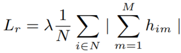

Regularizers¶
Regularizers are applied to weights and embeddings without the need for labels or tuples.
Here is an example of a weight regularizer being passed to a loss function.
from pytorch_metric_learning import losses, regularizers
R = regularizers.RegularFaceRegularizer()
loss = losses.ArcFaceLoss(margin=30, num_classes=100, embedding_size=128, weight_regularizer=R)
BaseRegularizer¶
regularizers.BaseWeightRegularizer(collect_stats = False,
reducer = None,
distance = None)
An object that extends this class can be passed as the embedding_regularizer into any loss function. It can also be passed as the weight_regularizer into any class that extends WeightRegularizerMixin.
Parameters
- collect_stats: If True, will collect various statistics that may be useful to analyze during experiments. If False, these computations will be skipped. Want to make
Truethe default? Set the global COLLECT_STATS flag. - reducer: A reducer object. If None, then the default reducer will be used.
- distance: A distance object. If None, then the default distance will be used.
Default distance:
Default reducer:
CenterInvariantRegularizer¶
Deep Face Recognition with Center Invariant Loss
This encourages unnormalized embeddings or weights to all have the same Lp norm.
regularizers.CenterInvariantRegularizer(**kwargs)
Default distance:
LpDistance(normalize_embeddings=False, p=2, power=1)- The distance must be
LpDistance(normalize_embeddings=False, power=1). However,pcan be changed.
- The distance must be
Default reducer:
LpRegularizer¶
This encourages embeddings/weights to have a small Lp norm.
regularizers.LpRegularizer(p=2, power=1, **kwargs)
Parameters
- p: The type of norm. For example,
p=1is the Manhattan distance, andp=2is Euclidean distance.
Default distance:
- This regularizer does not use a distance object, so setting this parameter will have no effect.
Default reducer:
RegularFaceRegularizer¶
RegularFace: Deep Face Recognition via Exclusive Regularization
This should be applied as a weight regularizer. It penalizes class vectors that are very close together.
regularizers.RegularFaceRegularizer(**kwargs)
Default distance:
CosineSimilarity()- Only inverted distances are compatible. For example,
DotProductSimilarity()also works.
- Only inverted distances are compatible. For example,
Default reducer:
SparseCentersRegularizer¶
SoftTriple Loss: Deep Metric Learning Without Triplet Sampling
This should be applied as a weight regularizer. It encourages multiple class centers to "merge", i.e. group together.
regularizers.SparseCentersRegularizer(num_classes, centers_per_class, **kwargs)
Parameters
- num_classes: The number of classes in your training dataset.
- centers_per_class: The number of rows in the weight matrix that correspond to 1 class.
Default distance:
CosineSimilarity()- This is the only compatible distance.
Default reducer:
ZeroMeanRegularizer¶
Signal-to-Noise Ratio: A Robust Distance Metric for Deep Metric Learning
regularizers.ZeroMeanRegularizer(**kwargs)
Equation
In this equation, N is the batch size, M is the size of each embedding.

Default distance:
- This regularizer does not use a distance object, so setting this parameter will have no effect.
Default reducer: